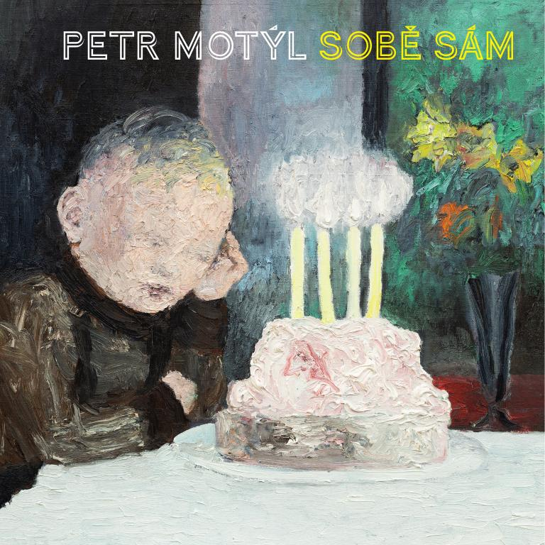
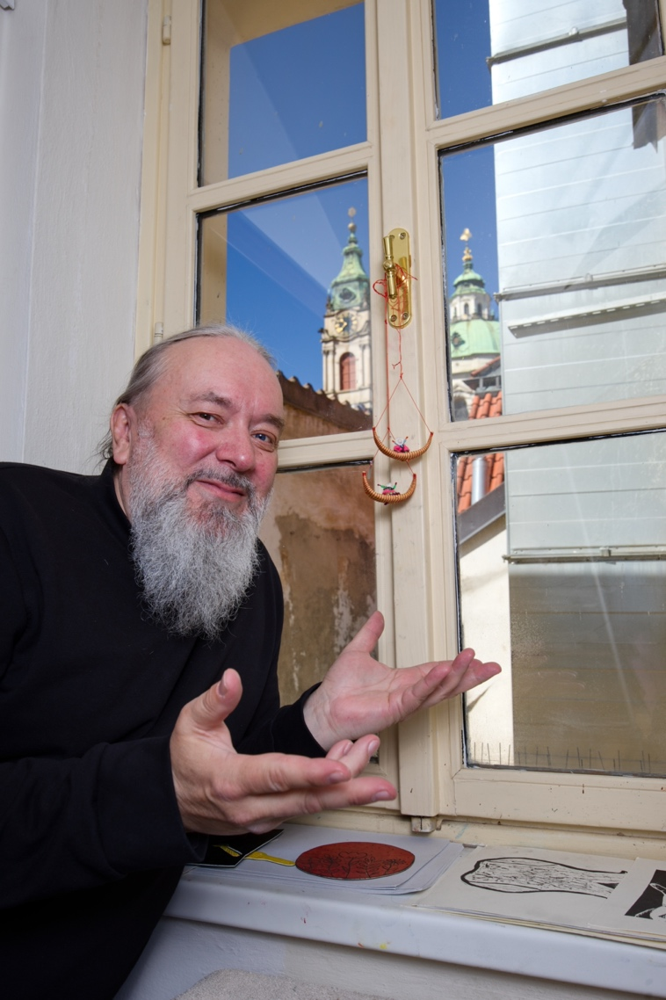

Petr Motýl - Sobě sám
Sobě sám

motýlsobě, 2024
Vydáno u příležitosti 60. narozenin autora. Výbor z vydaných i rukopisných sbírek obsahuje 60 textů. Na obálce reprodukce obrazu Pavla Šmída.
* * *
spřádají se fantastické děje
Marie bydlící někde na Smíchově
spatří Marii mezi dřevěnými umělci
opilý uhlíř dá se napáliti falešnou bankovkou
Smíchov – epická báseň z šeré dávnověkovosti
dřevění umělci shoří i jevištěm
Rozhovor u příležitosti 60. narozenin Petra Motýla pro časopis Protimluv, číslo 3/2024
online nedostupné, časopis Protimluv: https://protimluv.net/revue-protimluv/
Rozhovor se sebou samým
Ptal se Petr Motýl
U příležitosti mých šedesátých narozenin (slavnostní chvilka) vyšel výbor z mých básní, který se jmenuje Sobě sám. S podtitulem: S pomocí přátel. Básně jsem si vybral sobě sám, je jich šedesát.
Podnět k té knížce vyšel od mého kamaráda Zdeňka Mitáčka a on také oslovil pár lidí, které jsem mu navrhnul jako finančně na takovou věc připravené, nechtěl jsem, aby se vybíralo po stokorunách, to bych do toho nešel. Nejvíc přispěl sám Zdeněk Mitáček. Obraz na obálce je od Pavla Šmída, v Ostravě dobře známého, grafické práce udělal jako dárek k narozeninám Jakub Krč. A vyšlo to pod hlavičkou „nakladatelství“ motýlsobě. To znamená vlastním nákladem a v počtu sto kusů, z čehož jsem většinu rozdal na oslavě svých narozenin.
Na tu oslavu přišla i řada literátů, ač tedy obzvláště v posledních letech žíju mimo společenské setkávání s literárním světem. Ono to tak bylo po celý můj život, tak mi to bylo vlastní, taková byla moje cesta, jen teď je to nějak ještě intenzivnější. Ale oslava mých narozenin byly příjemně společenská a platí víc podtitul než titul výboru z mé dosavadní básnické tvorby, totiž: s pomocí přátel.
Když mi Jirka Macháček začátkem letošního roku nabídl rozhovor pro Protimluv, pojal jsem ho naopak v duchu Sobě sám a učinil jsem rozhovor se sebou samým.

Petr Motýl vrátným ve škole v Josefské ulici v Praze na Malé Straně, 2024 © Jiří Škorvaga
To nevypadá moc reprezentativně, k šedesátým narozeninám sešitek vlastním nákladem…
Reprezentativní to vskutku není, ale těší mě to. Je to knížka, jak jsem si ji chtěl udělat já, a nikdo mi do toho nemluvil. A nikdo na to nekladl nějaké redaktorské nebo dokonce vědecké požadavky. Myslím, že to dopadlo, jak jsem chtěl, aby knížka působila bezprostředně a aby tam nebyly žádné kompromisy. S tím mým odstupem od společenského literárního dění se samozřejmě minula s širším publikem čtenářů, přesněji řečeno se k publiku vůbec nedostala, jen k přátelům.
Pojal jsem ten výbor tak, že jsem vybral z každé tiskem vydané svojí sbírky jednu báseň a doplnil jsem na počet šedesáti básní texty z rukopisů. Zase vždycky jedna jediná báseň z jednoho rukopisu (často třeba špatného, ale ta jedna báseň tam je). Tím pádem jsem si prošel vlastně všechno, co jsem v poezii napsal, nebo skoro všechno, protože delší básnické skladby jsem vyřadil předem, ale těch jsem nevytvořil zase tak moc.
Protože ten rozhovor se sebou samým je pro ostravský časopis, tak je případné říci, že mě při probírání se sbírkami a rukopisy trochu zaskočilo, jak dlouho se mojí poezií táhne „ostravská stopa“. Nikdy nezmizela úplně, až dodnes ne, ale k trochu jiné poetice se moje básně překlopily až někdy po patnácti letech po odchodu z Ostravy. Ne, že by se pak to ostravské úplně vytratilo, ale přece jenom už se v mých básních začalo objevovat něco jiného, nejdříve přírodní motivy nasbírané hlavně při práci u geologů, posléze pražské pamětihodnosti, které nahradily reálie z pražských periferií.
Žiju v Praze od osmdesátého devátého roku, to už je třicet pět let. Také se moje poezie více přiklonila k Boží přítomnosti v tomto světě. Nezůstal jsem v šedesáti buřičem, tím jsem nejspíš nikdy nebyl, nicméně něco rebelujícího bývá přítomno ve většině poezie psané v mládí, ať už se vyhraňuje vůči kapitalismu, anebo, když jste mého data narození a vyrůstáte v komunismu, tak proti komoušům, nebo třeba, když žijete před první světovou válkou: vůči katolickému Rakousku. Princip je stejný.
Ale zůstat jenom u protestu a vzpoury do šedesáti, to mi přijde nějakým způsobem komické, jak si to pamatuju u Milana Kozelky, se kterým jsem se jednu dobu dost vídal. Byl to nesporně zajímavý člověk, o tom není pochybností. Dej mu věčné odpočinutí Pane, na hřbitově na Malvazinkách, kde si Milan Kozelka přál být pohřbený poblíž svých přátel z undergroundu Milana Kocha a Egona Bondyho, a pak uložili pár kroků od jeho hrobu Karla Gotta. On se o Gottovi Milan K. často zmiňoval, rukou mu hrozil…
Jak ale říkám, poněkud jsem se podivil, když jsem viděl, jak klíčové bylo a je pro mou poezii mládí prožité v Ostravě, při pročítání svých rukopisů a sbírek jsem byl vystaven té konfrontaci a viděl jsem, že jsem někdo jiný, jaksi z celkového pohledu, než ten poklidný bělovousý pán, který kráčí podél Žofína do práce na vrátnici, pohlížeje na proudící Vltavu, a těší se na důchod. Do Ostravy jsem přišel v jedenácti letech a odešel jsem z Ostravy v pětadvaceti, a tam se něco vytvořilo, co se do mě zapsalo hodně hluboko. Nejsem ostravský rodák, takže jsem se přece jen v poezii měl možnost vrátit ještě hlouběji v čase, do města Klatovy v západních Čechách, které má dvacet tisíc obyvatel a které ve mně utkvělo jako maloměstská idyla. Něco jako návrat na maloměsto u mne proběhlo na přelomu století prostřednictvím Heřmanova Městce, kde jsem v lese kus za městem pracoval šest let ve vojenském prostoru u geologů. Ale ta klatovská idyla v Heřmanově Městci nějak nebyla k nalezení, snad to městečko bylo až příliš malé, pětitisícové a závislé na blízkých velkoměstech Chrudimi a Pardubicích. Ale přitom to městečko bylo vyhlášeným pardubickým letoviskem, kromě chalupářů se tam vyskytovali i umělci dojíždějící do „Heřmaňáku“ na víkendy z dálav, ale ty umělce jsem míjel, jelikož jsem na víkendy jezdil domů k rodině. A tak jsem se v restauraci s příznačným jménem Eden nepotkával s víkendovým Ivanem Jirousem ani s Radomilem Uhlířem: ti dva se tam také navzájem míjeli a neměli se rádi. Dnes má v Edenu Ivan Jirous pamětní desku, ač Radomil Uhlíř dojížděl do Edenu mnohonásobně více let, často tam bydlel v hotelovém pokoji a měl k Heřmanovu Městci hlubokyý vztah, k heřmanoměstecké pouti konané na sv. Bartoloměje vztah přímo sakrální. A především měl Radomil U. v Městci svého jediného opravdového a celoživotního přítele Ondřeje Sigmunda, restaurátora památek. Ondřej Sigmund byl velký jazzový fanda a místní starousedlík, jeho manželka ubytovávat u Sigmundů doma (secesní vilka u zámeckého parku) Radomila Uhlíře odmítala a s Ondřejem S. jsem se neminul, to ne.
Ano, vždycky, opakuju vždycky, jsem uměl být v nesprávnou chvíli na nesprávném místě. Ne nějak úmyslně, to byl takový můj osud. A je stále. Míněno ve zmíněném společenském slova smyslu, o Heřmanově Městci jsem, myslím si, napsal dost dobrých básní. I o jiných místech, na nichž jsem byl v nesprávnou společenskou dobu, se mi, doufám, podařilo leccos pěkného napsat.
To je pořád takové obecné povídání, ostravského čtenáře by ale spíš než vzpomínky na Heřmanův Městec zajímaly nějaké rodinné drby o Motýlových. Ostravské drby.
O tom nechci říkat vůbec nic.
Není pak ale takový rozhovor pro ostravského čtenáře úplně zbytečný?
Ve své podstatě je každý rozhovor s umělcem zbytečný. Důležité je dílo, ne mediální zdatnost. Ale ono se to v současné době jeví být v očích většiny úplně naopak. Kdo je nejvíc mediálně vidět, je jako by nejlepší umělec. Tak to de facto funguje. Ale to pro mě vůbec neznamená, že bych měl pocit, že to do takto nastaveného stavu musím nějak začlenit. Navíc, vždyť bych to ani neuměl, kdybych s tím chtěl ve svých šedesáti letech začínat. Ale já s tím začínat nechci. To zní ode mne hezky, tak jako hrdě a zároveň skromně, že ano, ale pravda je, že jsem ke společenskému zařazení se a prosazení se neměl nikdy žádné předpoklady, žádný talent, žádné schopnosti, nic.
To zní rezignovaně… A poslechni, jelikož tě docela dobře znám, tak mám silný dojem, že jsi rezignoval i na to sledovat současnou českou literaturu, což tě dřív velice zajímalo a věnoval jsi tomu spoustu času.
Je to tak. To už je stáří. V tom směru jsem nevydržel. Ne že bych nic ze současné či přesněji mladé české literatury nečetl, ale je to jen sem a tam. Přehled jsem ztratil. Ono čím je člověk starší, tím má míň času – v poměru ke smrti, která ho dozajista nemine. A je otázka, čemu ten čas, který ještě zbývá, věnovat. Ona se stejně drtivá většina lidí věnuje i ve stáří tomu, čím se celý život zabývala, mechanismus zvyku je strašlivě silný. Ale já se tedy z vřelého zájmu o současnou českou literaturu, který mne po desetiletí držel, nějak vyvlékl.
Ostatně poznal jsem za svůj život jednoho jediného básníka, který se ve vysokém věku velmi živě o nejsoučasnější českou literaturu důkladně zajímal a četl ji, a to byl Petr Král. Naprostá výjimka.
Petr Král mi velice chybí. Měli jsme různé názory skoro na všechno, vídali jsme se jen občas, ale bylo to pro mě důležité. Petr Král poezii miloval a žil pro ni. A to bylo úžasné vědět, že někdo takový je, a mít možnost se s ním setkávat.
Básníci z generace Petra Krále mě ovlivnili vůbec nejvíc, Pavel Řezníček, se kterým jsem se vídával v prvním desetiletí našeho nového tisíciletí. A Ivan Wernisch, se kterým jsem se začal pravidelně setkávat až v posledních pěti letech. Poezie Ivana Wernische a Pavla Řezníčka měla na tu moji zásadní vliv, myslím, že poezie Petra Krále naopak minimální. Ale kdo je autor, aby to posuzoval…

Petr Král a Pavel Šmíd, Únětice 2016, foto Jiří Škorvaga
Ivan Wernisch je nesmírně vzdělaný člověk, on svou poezií či rozhovory v tom směru záměrně mate, to v něm je, veliká chuť své okolí mást. Petr Král znal současnou českou poezii, věděl všechno o avantgardách dvacátého století v literatuře, filmu i výtvarném umění, miloval jazz, byl jedinečným znalcem surrealismu, ale co bylo napsáno před rokem 1900, to ho vpodstatě nezajímalo. Ivan Wernisch má přečteno naprosto všechno, co kdy vyšlo v češtině, a spoustu z toho, co bylo za staletí vytištěno v němčině. A není to nějaké mechanické či univerzitní čtení, ale vhled básníka, i ve svém vysokém věku si to Ivan Wernisch pořád všechno pamatuje a umí o knihách opravdu s hlubokým pochopením pohovořit, umí precizně teoreticky formulovat, ač se literární kritice či vědě věnoval jen málo, pokud jde o publikované výsledky, je to pár předmluv, doslovů, něco článků v Literárkách, ale to není pověstný vrchol ledovce, to je jen sněhová vločka, která je z toho ledovce vidět na veřejnosti.
A tvoje četba?
V poezii se vracím k básníkům, které znám, zkrátka ke klasice, má to různé důvody, dejme tomu Šrámkův Splav a Stříbrný vítr jsem si nedávno znovu přečetl, protože jsem se podíval do města Písku, ale proč jsem vrátil třeba k Sandburgově Dobré jitro, Ameriko, to vlastně nevím, nejspíš proto, že tu knížku mám doma v knihovně. Carl Sandburg a Edgar Lee Masters pro mě patří k Ostravě, tam jsem tyto autory poprvé četl, to byli básníci, na základě jejichž tvorby se zformovala moje „ostravská“ poetika. Tito dva – mimo jiné - nechtěl bych tento rozhovor proměňovat v seznam četby. I když to jsem nějakým způsobem stejně už udělal. Ale mě knížky prostě vždycky hrozně zajímaly a bavily a hrozně mě zajímají a baví pořád.
Baví, baví… Co spíš nějakou zábavnou historku? Tu čtenáři rozhovorů čekají, proto rozhovory čtou…
Žádné zábavné historky už nezažívám. Nějak ode mne odešly… Kde jsou ty časy, kdy jsem se zašprajcoval ve dveřích hospody U Terflerů: „S tím medvědem nejde hnout!“ Zrovna před týdnem na to vzpomínal Štěpán Hron v Hostomické nálevně: „Ono se v těch Plasích půjde v holínkách sklepením kolem těch dubových pilotů, to je jasné, že ty tam nemůžeš, to by hrozilo, že Velký medvěd zase uvízne. Ale jak tam projde Petr Stančík, to teda fakt nevím, minulý týden se tady zastavil se slečnou o čtyřicet let mladší, a já ti říkám: neprojde!“ pravil Štěpán H. u tuplák…
Tímto zdravím Stolní společnost a jsem moc rád, že jsem se s ní setkal a že jsem býval jejím členem, byl to pocit velkého upřímného přátelství. Díky, Syndo a Roberte.

Pavel Šmíd, Petr Motýl a Jakub Synecký, Božská Lahvice 2023, foto Jiří Škorvaga
Inu, ono by přece bylo přirozené, kdyby zábavné historky zažívaly a vyprávěly o nich místo mne mladší generace, kdyby ty historky na mladší generaci jaksi přirozeně přešly, ale ono to vypadá, že se ze společnosti vytratilo zábavné vypravěčství jako takové: pro Prahu typické mnohem více než pro jiná místa Evropy. V zásadě jde o obecný jev, vyprávění se přesunulo na displeje obrazovek, zábava spočívá převážně v tom obrazovky sledovat.
Historky jsou pryč. Leží s Pavlem Řezníčkem na hřbitově na Olšanech. Je to tak. Onehdy můj kamarád Jakub Synecký říkal v hospodě židovský vtip, a nikdo se tomu vtipu nezasmál. A tak Jakub ráno odjel na Lévyho Hradec. A tak je to pořád. Ta současná společnost se chce spíše nudit než bavit se, i u těch displejů zívá a zívá. A já, ne že bych se snad taky nudil, to ani náhodou, ale na zábavu ve formě historek už jsem nějaký přestárlý.
Rád si v klidu něco přečtu. Když jdu z vrátnice, projdu se po nábřeží, ani na pivo už moc nechodím, myslím na svoje zdraví, které je chatrné. Kdepak, abych si způsoboval zábavné zdravotní problémy, o kterých bych mohl vtipně vyprávět do rozhovoru. A přitom bych tak rád psal zábavné prozaické knihy. Ale je to při tomhle duševním naladění možné?
Neboli to vidím tak, že je třeba rozhovor pomalu ukončit, bez rozverných historek, co už… Ještě bych se v rámci marketingu knížek, které nemají čtenáře, ale chtěl zmínit o svých plánovaných počinech. V létě mi vyšel překlad Skořicových krámů Bruno Schulze. Teď na podzim próza o životě a díle Ivana Wernische, původně to měly být jeho vzpomínky, ale to si IW rozmyslel. Ale na základě vzpomínek Ivana W. to napsané je. A další vydaná knížka je inspirovaná životem mého zesnulého přítele Tomáše Ligenzy, rodáka z Havířova, posléze obyvatele Prahy, jmenuje se Ahoj, Marku: to jsou ledy v pohybu.
Rád bych někdy dopsal prózu zakládající se na osudech mého zemřelého tchána a jeho předků, to je text ponejvíce se odehrávající ve Frýdku-Místku, měl by se jmenovat Příběh o ohni a popelu. Plánů mám spoustu, ale je mi jasné, že: „Když člověk plánuje, Bůh se směje.“ Je to tak, nepochybně.
Zrovna když jsem si pěkně naplánoval, co bych do konce roku chtěl napsat, tak mě na vrátnici, na kterou jsem docházel podél Žofína šest let, řekli, že už se mnou nepočítají, že mě končí smlouva: máš padáka, Petře. Asi to je akorát, u geologů jsem byl taky šest let, šest let jsem studoval v Ostravě pajdák, u agentury Securitas jsem šaškoval taky šest let, zase se to musí nějak přetočit, tak to je a má být. Jen aby na to bylo ještě sil.
Nicméně… V rámci „nakladatelství“ motýlsobě chystám – snad ještě letos – básnickou sbírku Třpyt, kde bude spousta obrázků Pavla Šmída. Podnět dal můj výbor Sobě sám, s Pavlem Šmídem jsme se párkrát sešli, jeho obraz je na obálce toho výboru, a Pavel Šmíd navrhl: „Pojďme spolu udělat něco jako před pětatřiceti lety v Ostravě.“ Byl jsem ihned pro. Na sklonku života se vrátit ke způsobu, jakým jsme pracovali v mládí, bez nakladatelů, bez oficiality. Samozřejmě, už jsme jiní a jinde, je to částečně hra a hravost, ale na druhou stranu při neutěšeném vztahu současného českého státu ke kultuře a ke vzdělání a v obecné situaci, kdy se „utahují šrouby“, se mi to jeví velmi případné. A moc se na to těším.
© Petr Motýl / design Zebry